Actividad 08. Servidor DNS en Windows
Objetivo de la actividad
Crear un servidor DNS que sea capaz de resolver zonas directa e indirectamente.
Trabajo a entregar
- Un tutorial de creación y configuración del servidor DNS en Windows que cubra todas las etapas
- Recuerda incluir también capturas correspondientes.
1. Configuración previa
-
Abre el servidor UbuWindows y configura su tarjeta de red del siguiente modo:
-
Abre el Administrador del Servidor (Server Manager).
- En el menú izquierdo haz clic en Servidor Local.
- Busca la línea donde dice Ethernet y haz clic sobre el enlace azul.
- En la ventana de conexiones, haz clic derecho sobre el adaptador Ethernet y selecciona Propiedades.
- Haz doble clic sobre Protocolo de internet versión 4 (TCP/IPv4).
- Selecciona "Usar la siguiente dirección IP"
- Introduce la IP del Servidor Windows 2019: 192.168.10.6
- IP servidor DNS: 192.168.10.6
- IP servidor DNS secundario: 8.8.8.8
2. Instalación del rol DNS
1.- Vamos a instalar el servicio DNS que en Windows Server 2019 es tratado como un rol de trabajo. Para ello seguir los pasos:
Panel ➔ Administrar ➔ Agregar roles y características

2.- Dejar valores por defecto en Antes de comenzar -> Tipo de instalación
3.- En Selección de servidor elejir el servidor actual.
4.- En roles de servidor hacer clic en Servidor DNS
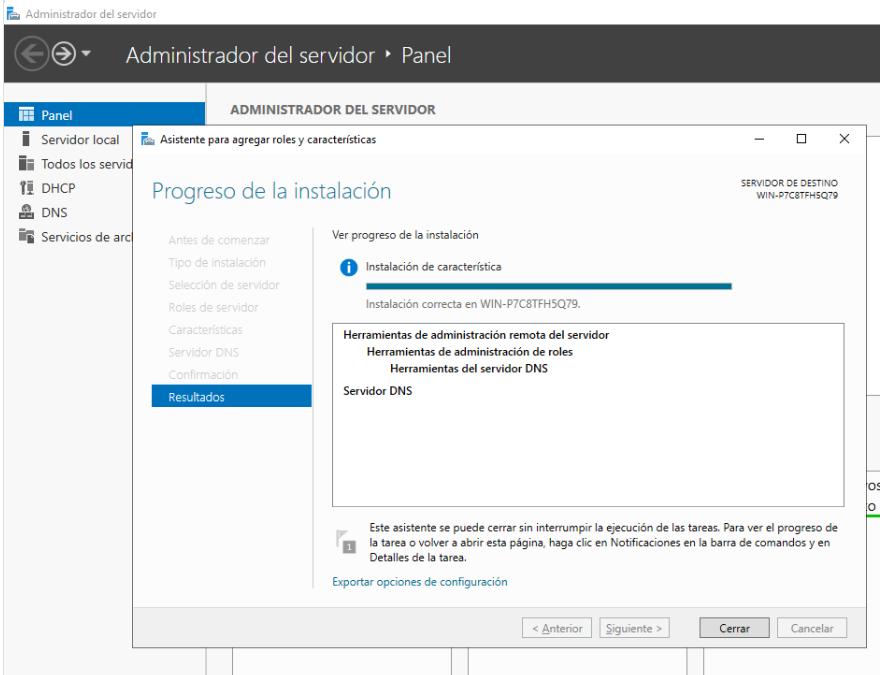
5.- Agregar características y seguir los pasos hasta terminar la instalación.
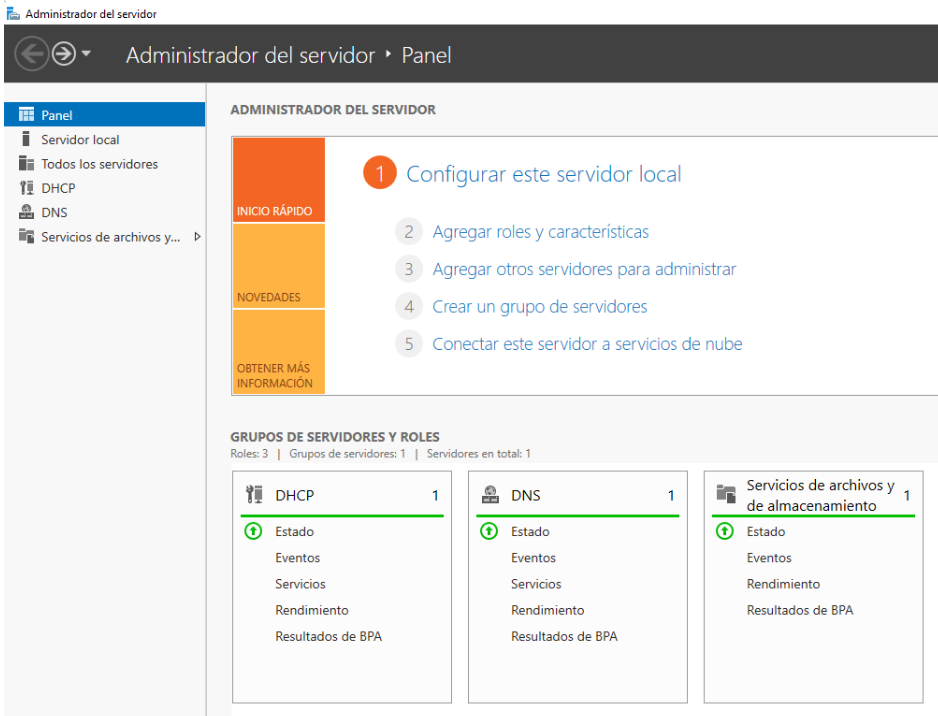
3. Creación de una zona de búsqueda directa
Como ya hicimos en el servidor DNS de Ubuntu, ahora vamos a configurar la zona directa en el servidor DNS de Windows. Para ello seguir los siguientes pasos:
1.- En el Administrador de Servicios, nos vamos a Herramientas y hacemos clic en DNS.
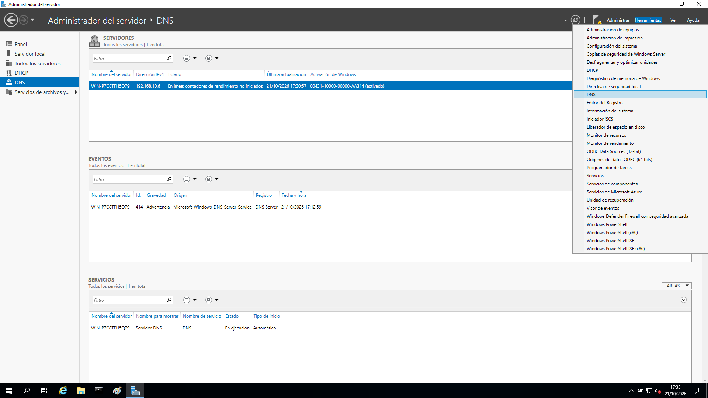
2.- Hacemos doble clic en DNS.
3.- Hacemos clic con el botón derecho sobre zonas de búsqueda directa
4.- Clic en zona nueva.
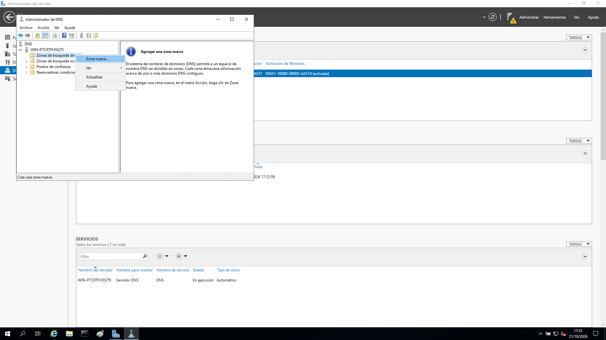
5.- A continuación aparecerá el Asistente para la nueva zona y debemos seguir los siguientes pasos indicando la siguiente información:
- Elegir zona principal
- Indicar como nombre de zona: nombre_alumno.local
- Crear archivo con nombre: nombre_alumno.local.dns
- No admitir actualizaciones dinámicas.
El resultado final será disponer de una zona DNS de resolución directa llamada nombre_alumno.local.dns
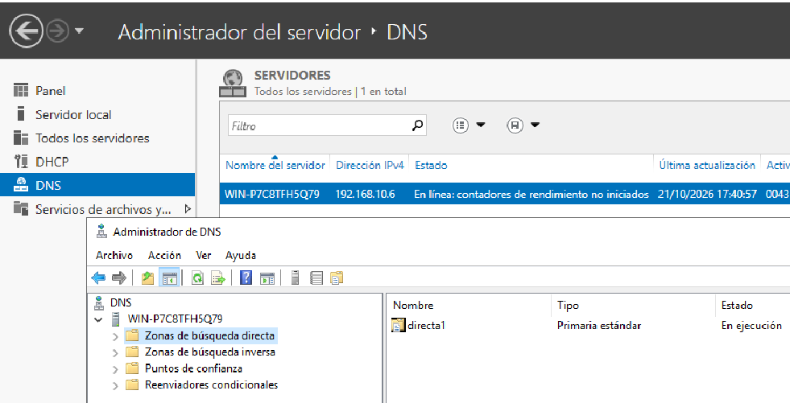
4. Creación de una zona de búsqueda inversa
El modo de creación será muy similar al utilizado para crear una zona DNS de resolución directa
1.- En el Administrador de Servicios, nos vamos a Herramientas y hacemos clic en DNS.
2.- Hacemos doble clic en DNS.
3.- Hacemos clic con el botón derecho sobre zonas de búsqueda inversa
4.- Clic en zona nueva.
5.- A continuación aparecerá el Asistente para la nueva zona y debemos seguir los siguientes pasos indicando la siguiente información:
- Elegir zona principal
- Indicar como nombre de zona de búsqueda inversa: zona de búsqueda inversa para IPv4
- Crear archivo con nombre: 192.168.10
- Indicar el archivo con nombre: 10.168.192.in-addr.arpa.dns
- No admitir actualizaciones dinámicas.
El resultado final será disponer de una zona DNS de resolución directa llamada 10.168.192.in-addr.arpa
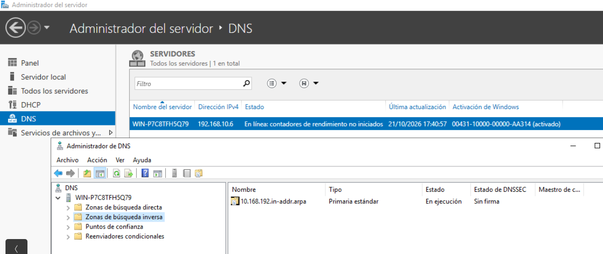
5. Configuración de la zona de búsqueda directa
Ahora vamos a configurar la zona de resolución directa asignando los mismos datos que trabajamos con el servidor DNS Ubuntu.
Para empezar deberás tener claras estos tres conceptos
- zona →
tunombrewin.local - nombre del servidor →
winserver - nombre de tu cliente →
tunombre
Zona tipo SOA
1.- Vamos a configurar la zona Tipo SOA. Para ello hacer clic con el botón derecho sobre (inicio de autoridad SOA) y abrirmos sus propiedades.
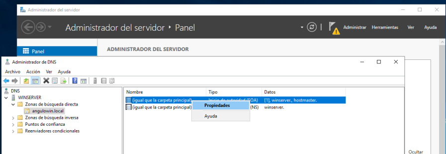
2.- Asginamos la información relativa a nuestro servidor: nombreservidor.zona
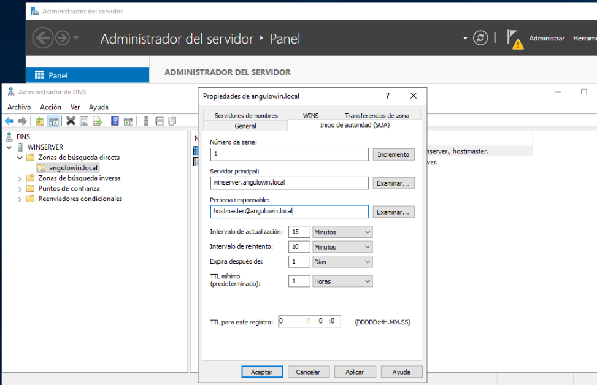
Zona tipo NS
1.- Para configurar la zona Tipo NS hay que hacer clic con el botón derecho sobre (Servidor de nombres DNS) y abrirmos sus propiedades.
2.- A continuación configuraremos el formulario con la siguiente información:
- del servidor DNS:
nombreservidor.zonad - de la persona responsable:
dejar valor por defecto
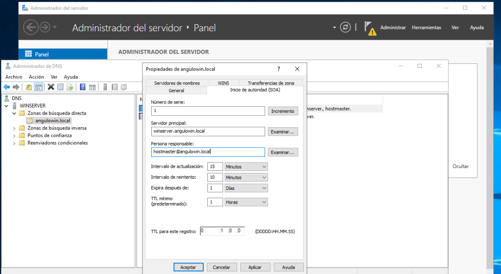
Zona tipo A
1.- Pulsar con el botón derecho del ratón en la zona creada y elegir Host nuevo (A o AAAA) para configurar lecturas TIPO A
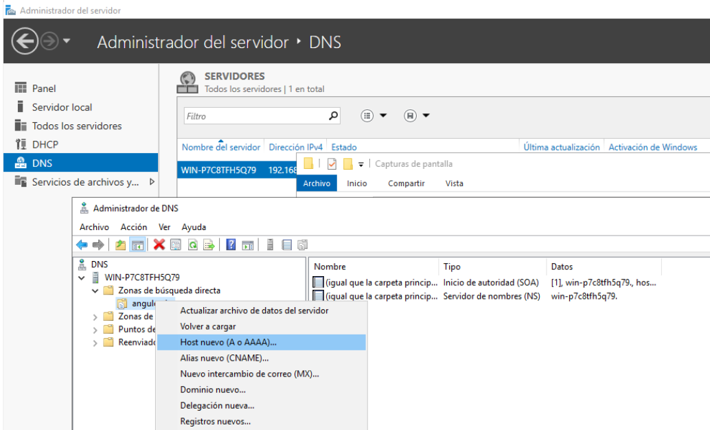
2.- En el formulario que os aparece indicar nombre FDQN completo y la IP correspondiente. Por ejemplo para la opción www.angulowin.local:
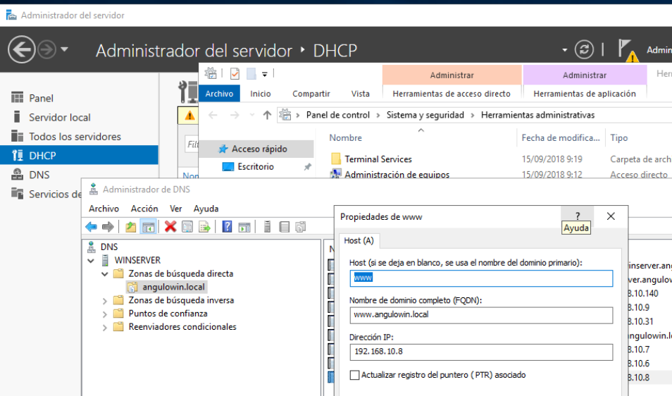
3.- Completa todas las entradas con la información que se muestra en la siguiente tabla:
| Nombre FQDN | IP |
|---|---|
| www | 192.168.10.8 |
| ftp | 192.168.10.9 |
| impresora1 | 192.168.10.31 |
| 192.168.10.7 | |
| cangulo | 192.168.10.140 |
| winserver | 192.168.10.6 |
Zona tipo CNAME
1.- A continuación vamos a completar la información relativa a los alias. Para ello pulsamos con el botón derecho sobre nuestra zona y elegimos la opciṕon CNAME.
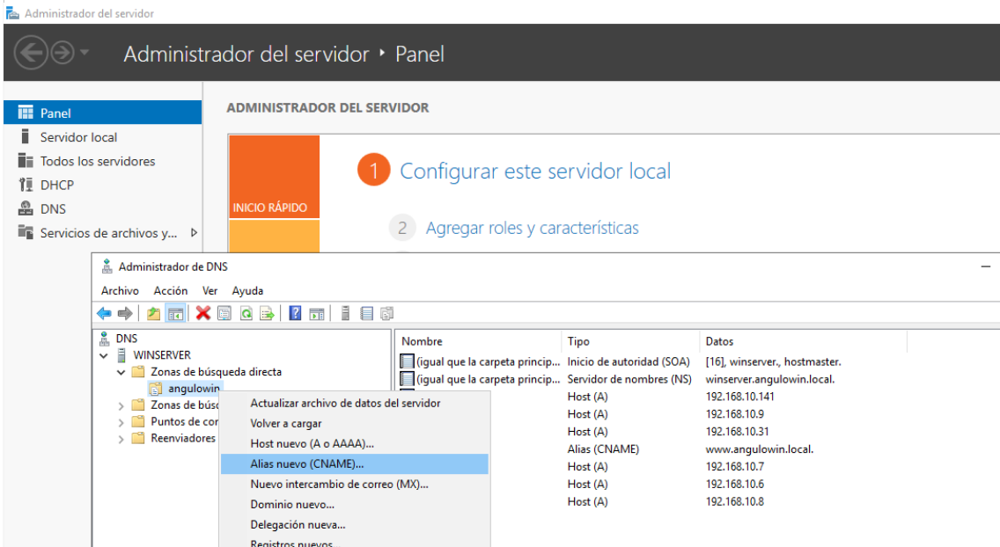
2.- Rellenamos el formulario con el alias del siguiente modo:
- Nombre del alias: info
- Nombre del dominio completo:
www.zona
Recuerda tu zona
Recuerda que tu zona debería ser algo parecido a tunombrewin.local. Por ejemplo cangulowin.local
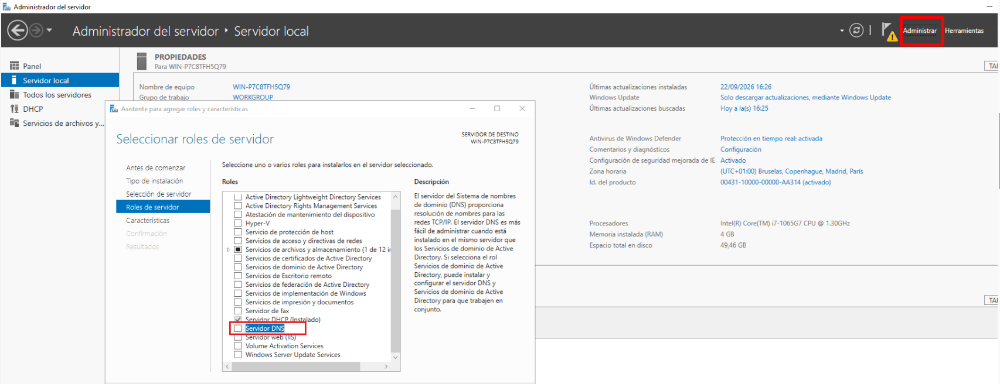
Resultado final zona directa
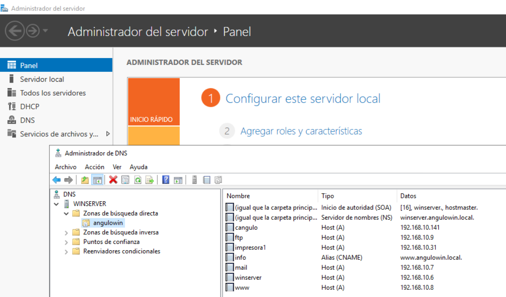
6. Configuración de la zona de búsqueda inversa
La configuración de la zona inversa se hará de modo muy similar la zona directa:
1.- La zona SOA y NS se configura igual que la zona directa.
Zona tipo PTR
1.- Para configurar los PTR haremos clic en la zona inversa y elegimos la opción (PTR)
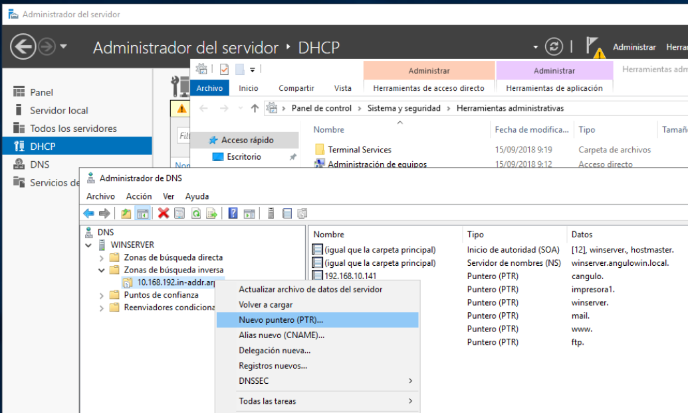
2.- Rellenar el formulario indicando las IP y la zona directa de cada elemento visto anteriormente
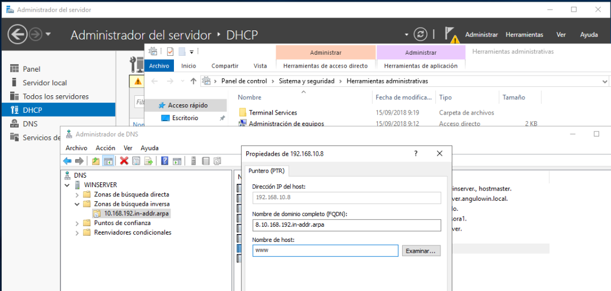
Resultado final zona inversa
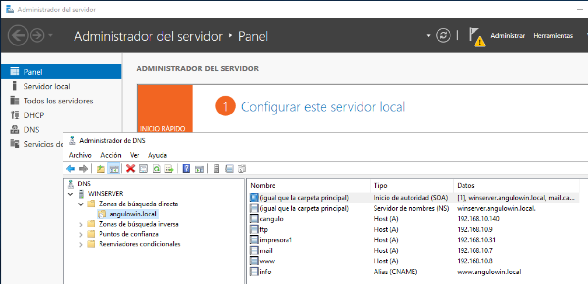